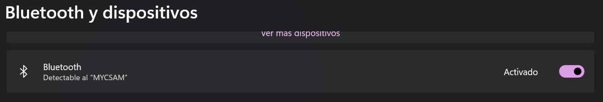

Guía para deshabilitar Bluetooth en equipos
Este protocolo detalla los pasos para deshabilitar y bloquear la funcionalidad de Bluetooth en los equipos, asegurando el cumplimiento de las políticas de seguridad de la empresa.
Paso 1: Desactivación desde la Configuración del Sistema
Esta es la primera y más simple verificación y acción a realizar.
- Haz clic en el menú "Inicio", selecciona "Configuración" y luego haz clic en "Bluetooth y dispositivos".
- Localiza el interruptor "Bluetooth". Si está activado, haz clic para ponerlo en la posición de "Desactivado".

Paso 2: Métodos de deshabilitación permanente
Si el usuario puede reactivar el interruptor, utilice los siguientes métodos para un bloqueo a nivel de sistema.
Método 1: Deshabilitar desde el Administrador de dispositivos
- Presiona Win + R para abrir la ventana "Ejecutar".
- Escribe
devmgmt.mscy presiona "Enter" para abrir el "Administrador de dispositivos". - Busca en la lista la categoría "Bluetooth" y despliégala.
- Haz clic derecho sobre el adaptador principal (ej. "Intel(R) Wireless Bluetooth(R)"). En el menú contextual, selecciona la opción "Deshabilitar dispositivo". Confirma la acción si se te solicita.

Confirmación de bloqueo: El ícono del dispositivo ahora debe mostrar una flecha negra hacia abajo. Esto indica que el hardware está deshabilitado a nivel de sistema operativo.
Método 2: Detener los servicios de Windows
- Presiona Win + R. Escribe
services.mscy presiona "Enter". - Busca el "Servicio de compatibilidad con Bluetooth". Haz doble clic sobre él.
- En la ventana de propiedades: primero, haz clic en el botón "Detener". Segundo, cambia el "Tipo de inicio" a "Deshabilitado". Finalmente, haz clic en "Aplicar" y "Aceptar".
Confirmación de bloqueo: El servicio ya no se ejecutará y no se iniciará automáticamente con el sistema. Repite el proceso para otros servicios relacionados con Bluetooth si es necesario.
Método 3: Deshabilitación vía PowerShell (Avanzado)
Este método es ideal para automatización y scripting. Ejecutar como Administrador.
- Haz clic derecho sobre el botón de "Inicio" y selecciona "Terminal (Administrador)" o "Windows PowerShell (Administrador)".
- Para detener los servicios en la sesión actual, copia y pega el siguiente comando y presiona "Enter":
Get-Service -Name *bth* | Stop-Service -Force - Para prevenir que los servicios se inicien en el futuro, usa este comando:
Get-Service -Name *bth* | Set-Service -StartupType Disabled

Confirmación de bloqueo: Al ejecutar Get-Service -Name *bth* de nuevo, el estado debe ser "Stopped" y el tipo de inicio "Disabled". Esto confirma que la política se ha aplicado correctamente.